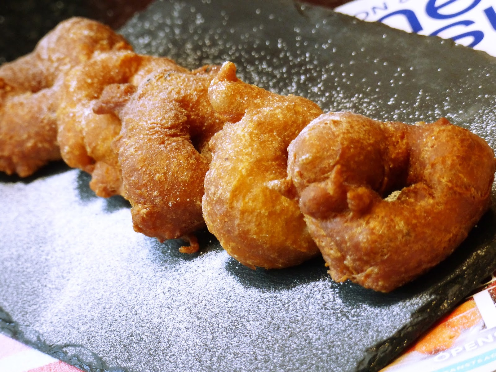

Pinkaso

Ingredients
- 1 cup all purpose flour
- 1 teaspoon salt
- 2 teaspoons instant yeast/ baking powder
- 1 whole chopped onion
- 2 scotch bonnet peppers
- 1 bundle of green/spring onions
- Vegetable Oil for frying
Steps
- In a large bowl, combine together flour, salt and yeast.
- Blend the pepper and onions with 200mls of lukewarm untill it forms a paste.
- Stir in the blended mixture to the flour mixture until well combined using your hand or wooden spatula. Mix until a dough is formed. The dough shouldn’t be too hard or too soft.
- Cover the bowl with a aluminum foil or wet towel and set aside for 2-3 hours. This is done to double the size of dough
- Pour some oil into the frying pan and heat it for a while.
- Wash your hands in water and punch dough to remove air. Fetch some of the dough for frying
- Use your thumb to create a hole in the middle of the dough and fry in the hot oil.
- Remove from oil when it becomes golden brown and drain oil using tissue paper or seive